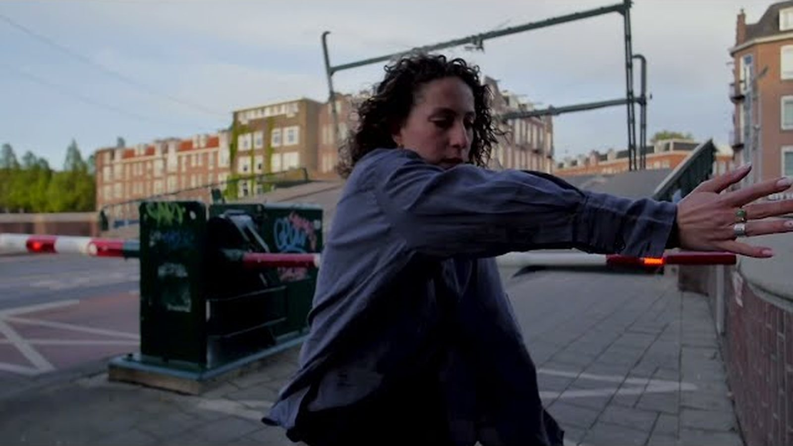
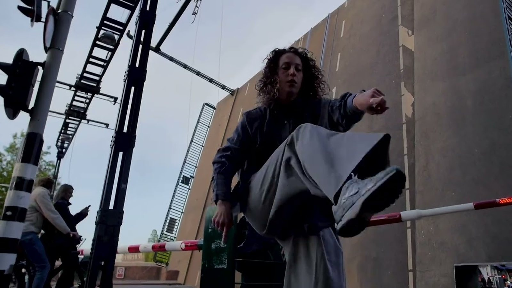
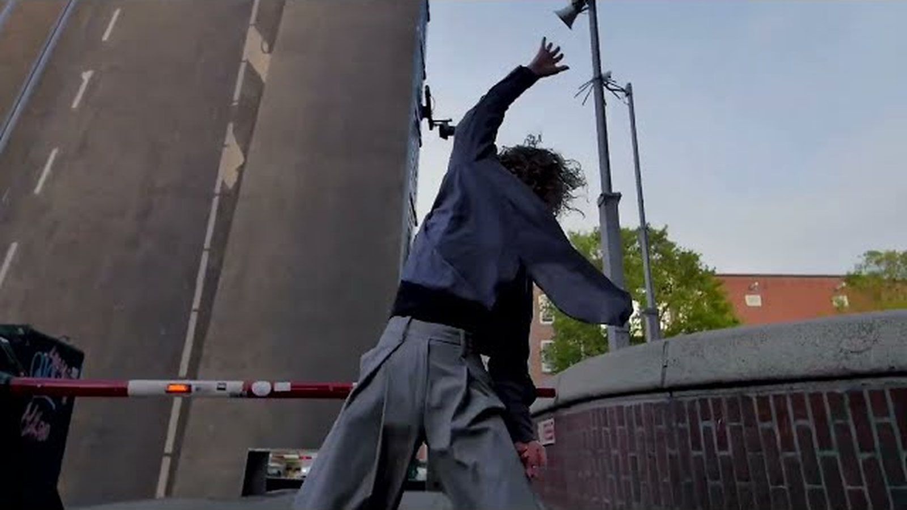

A practice by dEUSeXmACHINA films
The Session
The Session is where the film happens.
An audiovisual practice built on the encounter between a real person, a real place, a camera, movement and time.
The participant — usually a dancer or performer — is invited to be themselves. The location is an active part of the work. The filmmaker, who is also a dancer, responds physically to the performer with the camera.
The aim is not to predetermine the film, but to create the conditions for something unexpected to happen.
We don't create everything. We create the conditions for something to happen.
Visual introduction



The process
Meet
The person, before anything is filmed.
Explore
The place, and what it asks of the body.
Take 01
Discovery.
Take 02
Memory.
Take 03
Presence.
Film
What emerges.
Three takes
Discovery
First encounter with the person, the place and the camera.
Memory
The second take contains the memory of the first.
Presence
The accumulated discoveries become present.
These are stages of discovery, not attempts to achieve perfection. Mistakes, accidents and unexpected events may become part of the work.
The movement exists in time.
Whenever appropriate, long takes and continuous shots. The dancer should not have to dance the edit.
The sessions
A person enters a place.
The camera begins to move.
Three takes create memory.
Something unexpected happens.
The film emerges.
The Session is where the film happens.